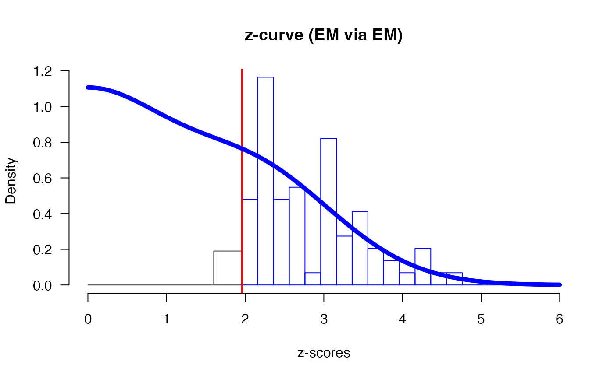

Fit a z-curve
zcurve.Rdzcurve is used to fit z-curve models. The function
takes input of z-statistics or two-sided p-values and returns object of
class "zcurve" that can be further interrogated by summary and plot
function. It default to EM model, but different version of z-curves can
be specified using the method and control arguments. See
'Examples' and 'Details' for more information.
zcurve( z, z.lb, z.ub, p, p.lb, p.ub, method = "EM", bootstrap = 1000, control = NULL )
Arguments
| z | a vector of z-scores. |
|---|---|
| z.lb | a vector with start of censoring intervals of censored z-scores. |
| z.ub | a vector with end of censoring intervals of censored z-scores. |
| p | a vector of two-sided p-values, internally transformed to z-scores. |
| p.lb | a vector with start of censoring intervals of censored two-sided p-values. |
| p.ub | a vector with end of censoring intervals of censored two-sided p-values. |
| method | the method to be used for fitting. Possible options are
Expectation Maximization |
| bootstrap | the number of bootstraps for estimating CI. To skip
bootstrap specify |
| control | additional options for the fitting algorithm more details in control EM or control density. |
Value
The fitted z-curve object
Details
The function returns the EM method by default and changing
method = "density" gives the KD2 version of z-curve as outlined in
Bartoš and Schimmack (2020)
. For the original z-curve
(Brunner and Schimmack 2020)
, referred to as KD1, specify
'control = "density", control = list(model = "KD1")'.
References
Bartoš F, Schimmack U (2020).
“Z-curve. 2.0: Estimating Replication Rates and Discovery Rates.”
doi: 10.31219/osf.io/wr93f
, submitted for publication.
Brunner J, Schimmack U (2020).
“Estimating population mean power under conditions of heterogeneity and selection for significance.”
Meta-Psychology, 4.
doi: 10.15626/MP.2018.874
.
See also
Examples
# load data from OSC 2015 reproducibility project OSC.z#> [1] 2.409175 3.245251 2.164192 3.191229 2.702059 3.137051 8.402858 #> [8] 3.718460 4.293275 3.512496 1.973777 7.066053 4.383039 3.536266 #> [15] 3.392537 2.194877 3.059374 4.637228 3.982280 2.169338 1.946709 #> [22] 2.268213 4.180570 3.459550 3.731395 1.836848 3.100000 10.000000 #> [29] 2.967738 2.183487 2.408916 2.365618 2.257129 1.968592 3.909901 #> [36] 2.273435 10.000000 2.307984 2.290368 2.967738 2.014091 10.000000 #> [43] 10.000000 3.290527 2.432379 2.014091 2.575829 10.000000 2.307984 #> [50] 2.967738 2.967738 1.792831 3.290527 1.959964 2.297408 2.053749 #> [57] 10.000000 2.542699 2.403655 10.000000 3.410733 2.975294 3.849639 #> [64] 10.000000 2.273435 2.106589 3.694892 2.195944 2.307984 4.178900 #> [71] 1.951480 2.967738 2.226212 2.290368 2.967738 2.780638 2.612054 #> [78] 10.000000 2.652070 10.000000 2.725494 2.652070 3.042724 2.652070 #> [85] 2.970656 2.257129 2.386708 3.403461 2.120072 2.688852# fit an EM z-curve (with disabled bootstrap due to examples times limits) m.EM <- zcurve(OSC.z, method = "EM", bootstrap = FALSE) # a version with 1000 boostraped samples would looked like: m.EM <- zcurve(OSC.z, method = "EM", bootstrap = 1000) # or KD2 z-curve (use larger bootstrap for real inference) m.D <- zcurve(OSC.z, method = "density", bootstrap = FALSE) # inspect the results summary(m.EM)#> Call: #> zcurve(z = OSC.z, method = "EM", bootstrap = 1000) #> #> model: EM via EM #> #> Estimate l.CI u.CI #> ERR 0.615 0.450 0.747 #> EDR 0.388 0.078 0.699 #> #> Model converged in 35 + 435 iterations #> Fitted using 73 z-values. 90 supplied, 85 significant (ODR = 0.94, 95% CI [0.87, 0.98]). #> Q = -60.61, 95% CI[-71.25, -46.96]#> Call: #> zcurve(z = OSC.z, method = "density", bootstrap = FALSE) #> #> model: KD2 via density #> #> Estimate #> ERR 0.613 #> EDR 0.506 #> #> Model converged in 47 iterations #> Fitted using 73 z-values. 90 supplied, 85 significant (ODR = 0.94, 95% CI [0.87, 0.98]). #> RMSE = 0.11# see '?plot.zcurve' for more plotting options # to specify more options, set the control arguments # ei. increase the maximum number of iterations and change alpha level ctr1 <- list( "max_iter" = 9999, "alpha" = .10 ) m1.EM <- zcurve(OSC.z, method = "EM", bootstrap = FALSE, control = ctr1) # see '?control_EM' and '?control_density' for more information about different # z-curves specifications